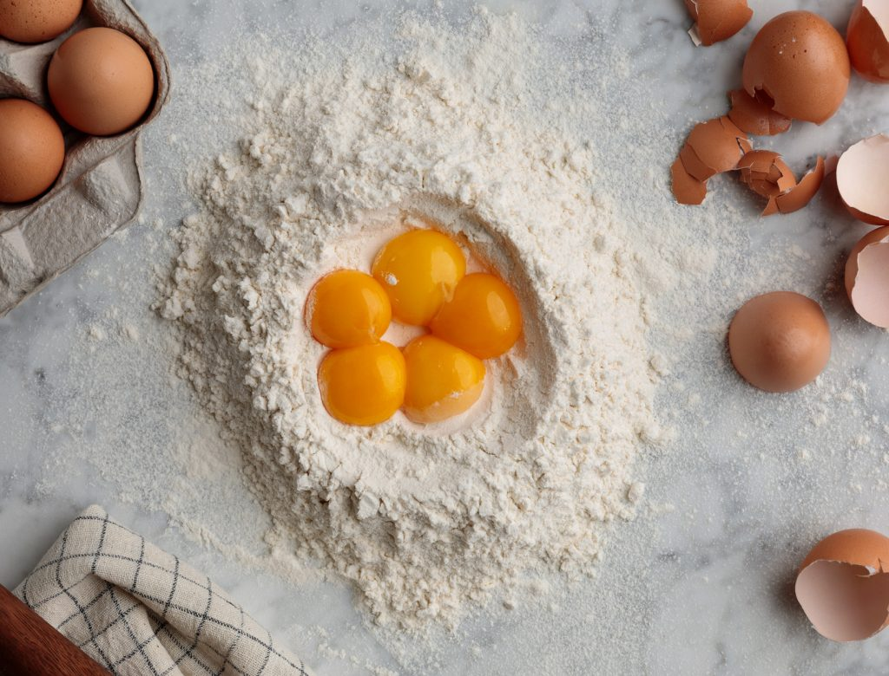
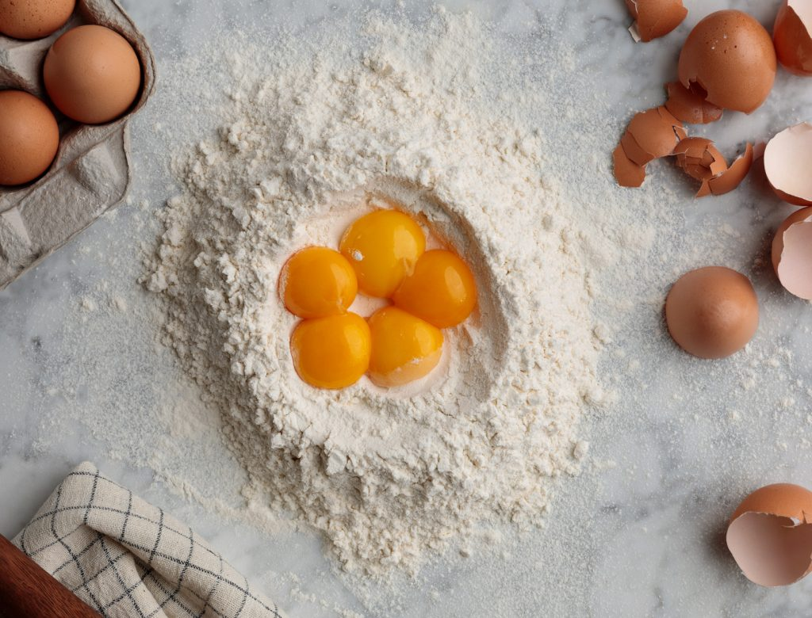

“Simple ingredients and little bit of love is all you need to make your own perfect pasta dough. ”
ingredients:
6 large free-range eggs
600g flour

- 1. Place the flour on a board or in a bowl. Make a well in the centre and crack the eggs into it. Beat the eggs with a fork until smooth.
- 2. Using the tips of your fingers, mix the eggs with the flour, incorporating a little at a time, until everything is combined.
- 3. Knead the pieces of dough together – with a bit of work and some love and attention they’ll all bind together to give you one big, smooth lump of dough!
- 4. Once you’ve made your dough you need to knead and work it with your hands to develop the gluten in the flour, otherwise your pasta will be flabby and soft when you cook it, instead of springy and al dente. There’s no secret to kneading. You just have to bash the dough about a bit with your hands, squashing it into the table, reshaping it, pulling it, stretching it, squashing it again. It’s quite hard work, and after a few minutes it’s easy to see why the average Italian grandmother has arms like Frank Bruno! You’ll know when to stop – it’s when your pasta starts to feel smooth and silky instead of rough and floury.

600g flour

- 1. Place the flour on a board or in a bowl. Make a well in the centre and crack the eggs into it. Beat the eggs with a fork until smooth.
- 2. Using the tips of your fingers, mix the eggs with the flour, incorporating a little at a time, until everything is combined.
- 3. Knead the pieces of dough together – with a bit of work and some love and attention they’ll all bind together to give you one big, smooth lump of dough!
- 4. Once you’ve made your dough you need to knead and work it with your hands to develop the gluten in the flour, otherwise your pasta will be flabby and soft when you cook it, instead of springy and al dente. There’s no secret to kneading. You just have to bash the dough about a bit with your hands, squashing it into the table, reshaping it, pulling it, stretching it, squashing it again. It’s quite hard work, and after a few minutes it’s easy to see why the average Italian grandmother has arms like Frank Bruno! You’ll know when to stop – it’s when your pasta starts to feel smooth and silky instead of rough and floury.